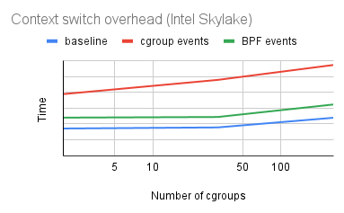
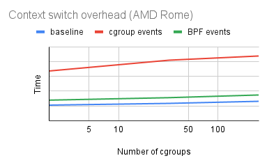

Adding features to perf using BPF
Arnaldo Carvalho de Melo
acme@redhat.com
|
Song Liu
song@kernel.org
|
Namhyung Kim
namhyung@kernel.org
|
What is this about?
- perf tools: familiar control plane
- BPF: flexible, powerful dataplane
- BTF for pretty printing and more
perf for BPF
- BPF profiling
- BPF sampling
- BPF annotation
- BPF event counting
BPF for perf
- BPF event counting
- perf using BPF to count events in BPF code
- bpftool prog profile
- perf stat -b/--bpf-prog PROG_ID
- perf stat --bpf-counters
- perf stat --bpf-counters --for-each-cgroup
BPF for perf
- Reuse BPF infrastructure in perf
- build-ids
- bpf_get_stack(BPF_F_USER_BUILD_ID)
- Use in PERF_RECORD_MMAP2
bpfprog profile
- Limited to some events
- cycles, instructions, l1d_loads, llc_misses
- itlb_misses and dtlb_misses
- Different workflow from familiar 'perf stat'
- New tool, few features
bpftool prog profile help
$ bpftool prog help
bpftool prog profile PROG [duration DURATION] METRICs
PROG := { id PROG_ID | pinned FILE | tag PROG_TAG | name PROG_NAME }
METRIC := { cycles | instructions | l1d_loads | llc_misses | itlb_misses | dtlb_misses }
$
bpftool prog profile
$ bpftool prog profile id 324 duration 3 cycles itlb_misses
1885029 run_cnt
5134686073 cycles
306893 itlb_misses
perf stat for BPF
- Just another target
- pid, tid, cpu, cgroup, BPF_PROG
- Familiar workflow
- Lots of events
- Metrics
- First class perf stat citizen
But how? BPF skels
- Canonical example: tools/bpf/runqslower
- Lots of boilerplate taken care of
- BPF built and "linked" with perf
- Details on Devconf.cz 2020 BPF talk
Using it
# perf stat -e ref-cycles,cycles --bpf-prog 254 --interval-print 1000
1.487903822 115,200 ref-cycles
1.487903822 86,012 cycles
2.489147029 80,560 ref-cycles
2.489147029 73,784 cycles
3.490341825 60,720 ref-cycles
3.490341825 37,797 cycles
#
# # Equivalent to:
#
# perf stat -e ref-cycles,cycles -b 254 -I 1000
perf stat BPF counters
- FILL IN
- ADD SLIDE SHOWING IT IN ACTION
- TO SHOW ITS ADVANTAGES OVER PERF STAT
bperf: perf stat with BPF backend
bperf: the problem
- Mutliple tools monitor same common metrics (cycles, instrcutions) at different granularities: system wide, per process, per request, etc.
- Limited hardware counters
- Time multiplexing when there are more active events than hardware counters: low accuracy or high overhead
- Sharing counters in kernel is hard. After v13 of this patchset , I started hating it myself.
bperf: the solution
- Use BPF to manage hardware hardware counters
- Create per cpu perf events on each cpu
- BPF program triggers on the context switch, reads perf events, and aggregates reading in BPF maps.
- User space reads output from BPF maps.
bperf: share across processes
- BPF hashmap pinned in
/sys/fs/bpf/perf_attr_map
- Each user holds a fd to the bpf_link
- The perf_events, BPF programs, maps are freed when the last user exits (or closes all fds)
struct perf_event_attr_map_entry {
__u32 link_id; /* bpf_link of the leader prog */
__u32 diff_map_id;
};
bperf: share across processes
- Monitor daemons and self monitoring processes may share hardware counters with perf-stat
- Kernel supports up to 38 (BPF_MAX_TRAMP_PROGS) follower progs per leader prog
- Share one set of hardware counters (one per cpu) among up to 38 different processes
perf stat cgroup Usecase
- Google runs hundreds of jobs on a single machine
- any workload runs inside a cgroup
- wants to monitor each job (counting mode)
- reference: LPC 2019 talk
Scalability issues
- each cgroup has its own perf_event
- needs (#events x #cpus x #cgroups) fds
- increases cgroup context switch overhead
- by reprogramming PMU counters
- workaround
- limits number of cgroups to profile at once
- creates blind spots and inconsistent data
Cgroup perf events
- cpu perf events with associated cgroup
- measuring same events across cgroups
- this is the most common use case at Google
- ensured by --for-each-cgroup
- no need to have separate events for cgroups
- but still need separate counts per cgroup
In-kernel aggregation
- proposed ioctl-based approach
- using a cpu event (for each cpu)
- collects event counts for current cgroup
- no PMU reprogramming during context switch
- rejected due to interface concerns
BPF based approach
- thanks to bperf infra by Song Liu
- same design, but doing it in BPF
- attaches to cgroup-switches* event
- collects event counts for current cgroup
- saves the results in per-cpu array
* a software event added to v5.13
Results
- estimated context switch time
- tasks communicate through pipes
- tasks are in different cgroups


Future
- triggers: start/stop perf events from bpf program
- Use bpf_get_branch_snapshot() in perf tools
- Helping developers figure out ENOSOMETHING from perf_event_open()
- As default case for evsel__open_strerror()
- Show a backtrace
- in addition to asking user to look at dmesg output
- Presentations at: http://vger.kernel.org/~acme/bpf/